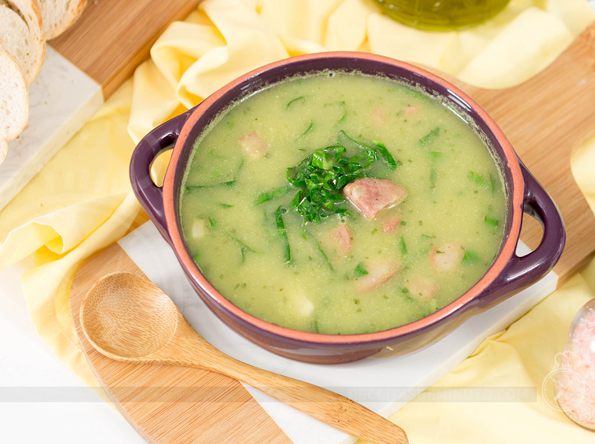

Caldo Verde Rapido

Receita
Como fazer um delicioso caldo verde rapido e pratico?
A receita e mais simples do que voce imagina. Veja a seguir:
Ingredientes
- 500 gramas de batatas
- Água até cobrir as batatas
- 1/2 cebola
- 1 fio de azeite
- 1 linguiça calabresa fatiada
- Sal e pimenta a gosto
- 4 folhas de couve fatiada
Como fazer?
- Em uma panela de pressão, adicione as batatas, cubra elas com água e cozinhe por cerca de 8 minutos.
- Descasque as batatas, transfira para um liquidificador com um pouco da água do cozimento, a cebola e bata até ficar homogêneo.
- Na mesma panela, coloque um fio de azeite e refogue a calabresa.
- Junte o creme de batata, ajuste o sal e acrescente a pimenta.
- Caso queira o caldo mais ralo, adicione um pouco mais da água do cozimento.
- Quando começar a ferver, coloque a couve e deixe cozinhar por mais alguns minutinhos.
- Agora é só servir. Bom apetite.